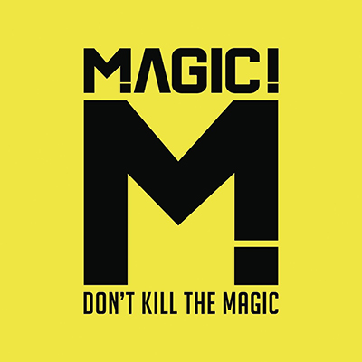
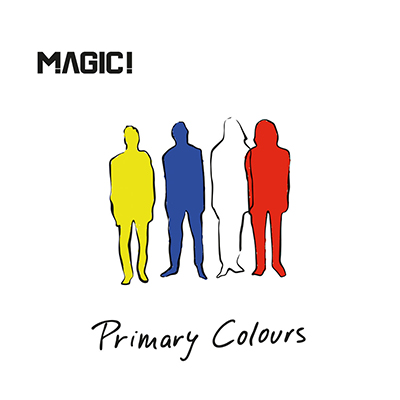
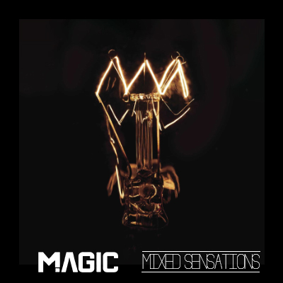
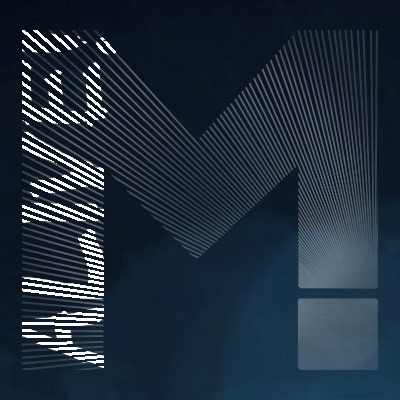

MAGIC!
Don't Kill The Magic (2014)

-
Información
- Lanzamiento: 30 de junio de 2014.
- Lugares de Grabación:
- Swing House Recording, Hollywood, California
- The Ox, North Hollywood, California
- Sello discográfico: Latium RCA
- Productores: Nasri Atweh, Fraser T. Smith, Adam Messinger y Mark "Pelli" Pellizzer
- Singles:
- Rude - Lanzado el 24 de febrero de 2014.
- Don't Kill the Magic - Lanzado el 4 de abril de 2014.
- Let your Hair Down - Lanzado el 7 de octubre de 2014.
- No Way No - Lanzado el 3 de marzo de 2015.
-
Tracklist
- "Rude" 3:44
- "No Evil" 3:22
- "Let Your Hair Down" 4:25
- "Stupid Me" 3:44
- "No Way No" 3:51
- "Paradise" 3:55
- "Don't Kill the Magic" 3:37
- "One Woman One Man" 3:59
- "Little Girl Big World" 3:23
- "Mama Didn't Raise No Fool" 4:07
- "How Do You Want to Be Remembered" 4:03
- "I Would" 2:53 Bonus Track Japonés
- "Rude (Acoustic)" 3:43 Bonus Track Japonés
Primary Colours (2016)

-
Información
- Lanzamiento: 1ero de julio de 2016.
- Lugares de Grabación:
- Larrabee Studios, North Hollywood, California.
- Noah's Ark, Toronto, Ontario, Canadá.
- Sello discográfico: Latium RCA, Sony
- Productores: Adam Messinger, Nasri Atweh, Mark Pellizzer y Alex Tanas.
- Singles:
- Lay You Down Easy - Lanzado el 24 de marzo de 2016.
- Red Dress - Lanzado el 17 de junio de 2016.
- No Regrets - Lanzado el 14 de octubre de 2016.
-
Tracklist
- "Have It All" 3:38
- "Lay You Down Easy" (featuring Sean Paul) 2:44
- "Gloria" 3:46
- "Red Dress" 3:21
- "No Regrets" 3:32
- "Dance Monkey" 4:28
- "No Sleep" 2:47
- "I Need You" 3:51
- "Primary Colours" 3:23
- "The Way God Made Me" 3:46
Mixed Sensations (2017)

-
Información
- Lanzamiento: 15 de julio de 2017.
- Lugares de Grabación:
- Larrabee Studios, North Hollywood, California.
- Noah's Ark, Toronto, Ontario, Canadá.
- Sello discográfico: Latium RCA, Sony
- Productores: Adam Messinger, Nasri Atweh, Mark Pellizzer y Alex Tanas.
- Singles:
- No tuvo.
-
Tracklist
- "Have It All" 3:38
- "Lay You Down Easy" (featuring Sean Paul) 2:44
- "Gloria" 3:46
- "Red Dress" 3:21
Magic Alive (2018)

-
Información
- Lanzamiento: 23 de febrero de 2018.
- Lugar de Grabación:
- Grabado los dìas 21 y 22 de agosto de 2016 en The Borderline, Londres, Reino Unido.
- Sello discográfico: Latium RCA, Sony
- Productores: Adam Messinger, Nasri Atweh, Mark Pellizzer y Alex Tanas.
- Singles:
- Knockin' On Heavens Door - Lanzado el 23 de marzo de 2018.
- Red Dress - Lanzado el 15 de abril de 2018.
-
Tracklist
- "Have It All"
- "Rude"
- "Don't Kill the Magic"
- "Knockin' On Heavens Door (cover Bob Dylan)"
- "Let your Hair Down"
- "No Way No"
- "Red Dress"
- "No Regrets"
- "Dance Monkey"
- "No Sleep"
- "I Need You"
- "Primary Colours"
- "Waitin' (cover de Los Pericos)"
- "The Way God Made Me" 3:46